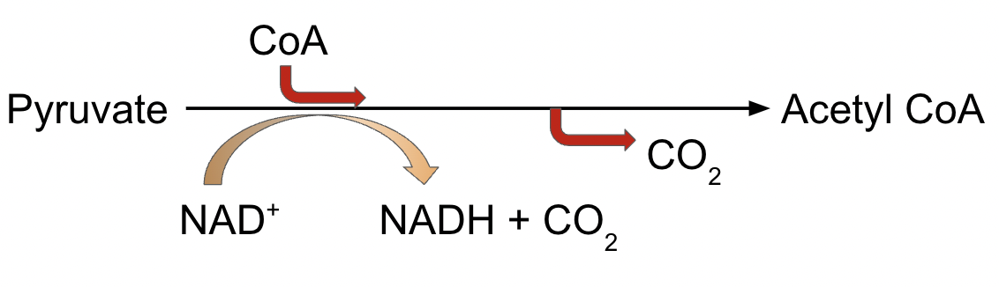
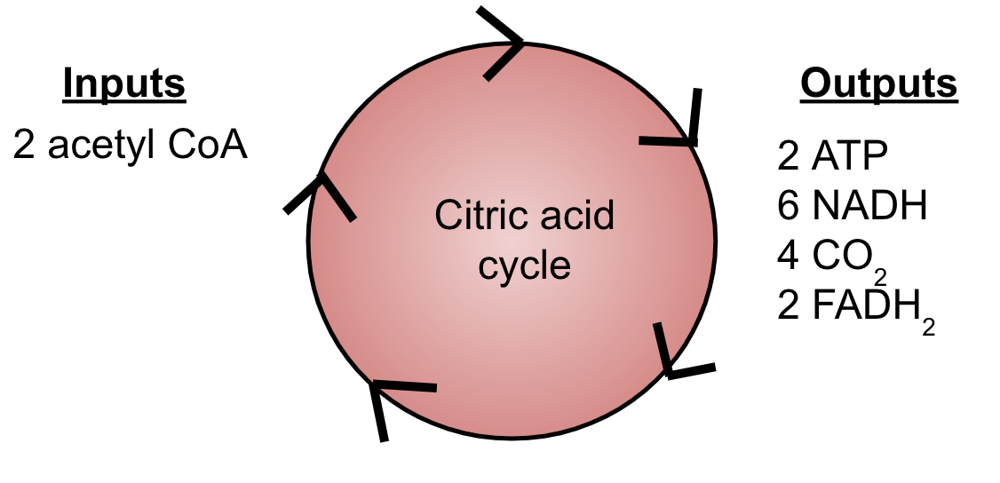

Pyruvate Oxidation and Citric Acid Cycle
If oxygen is present, the pyruvate enters the mitochondria (eukaryotic cells)
Pyruvate Oxidation
- Pyruvate is oxidized into acetyl coA
- Acetyl coA is used to make citrate in the citric acid cycle
- 2 CO2 and 2 NADH are produced

Citric Acid Cycle
- Also known as the Krebs cycle
- Occurs in the mitochondrial matrix
- Turns acetyl CoA into citrate
- Releases CO2
- ATP synthesized
- Electrons transferred to NADH and FADH2


Extra Resources: